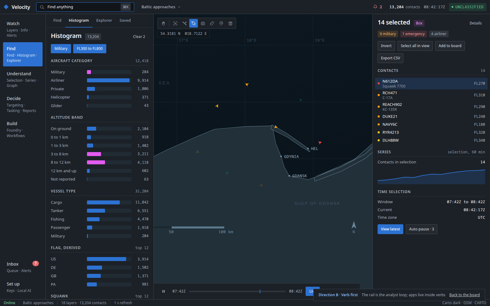
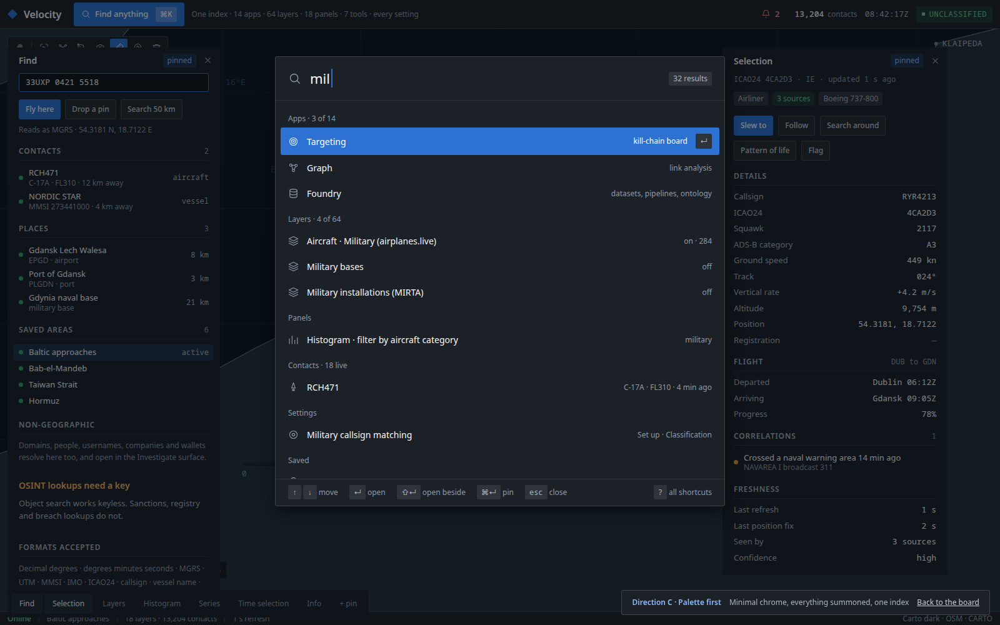

Checked against Palantir's own material
The palette is not designed from memory. Two official Palantir G-Cloud 14
service definition PDFs were downloaded, their embedded UI screenshots
extracted, and the chrome pixel-sampled. The dominant colours in the
Gotham Video and Graph screenshots are #30404D,
#293742, #202B33, #394B59 and accent
#137CBD, which are classic Blueprint to a delta of zero.
Gotham is built on Blueprint, which Palantir publishes.
So every colour token here is a Blueprint value, verbatim, from the current release 5.1.16 rather than the older ramp in the 2024 screenshots. Verified programmatically: 0 tokens outside the published palette, and every text tier still clears 4.5:1 in both themes.
What is actually different
The first pass of these mockups was rejected for looking like the current console,
and it did: it reused theme/tokens.css verbatim, the four-row
ConsoleShell grid, the tinted section-label bars and the 11px density.
Five signatures of the existing UI, carried over unchanged. This pass departs on
each of them, and every departure is a fix for something already recorded as a
problem.
| Axis | Departure | The problem it fixes |
|---|---|---|
| Colour | Warm ink to cool near-black, and a genuinely light surface for Foundry, Workflows and Explorer | Colour is the strongest signal of "same product". It also encodes the Gotham and Foundry split: dark when you are watching, light when you are building. |
| Layout | Three columns that shrink the map when a panel opens, replaced by an edge-to-edge map with floating glass panels. Nothing owns a grid track. | Opening a panel no longer makes the globe narrower, and the globe is never boxed in. docs/frontend.md:99 says the map must never be covered by permanent chrome; a column that steals 336px is permanent chrome. |
| Shell | The 26px classification band and the 158px timeline footer are gone. A floating 52px bar, marking as an inline pill, time as a collapsible dock over the map. | Four grid rows down to zero. About 230px of vertical returned to the map. |
| Type | Body 13px to 14px, floor 11px to 12px, and a real jump to 20px panel titles so a panel reads at a glance | docs/decisions.md:1017 already concluded the density was what read as "AI dashboard". The app still carries 780 sub-11px literals against its own floor. |
| Map | An abstract globe with amoeba landmasses. Replaced by a real basemap at the zoom the data implies: the Baltic approaches at a 100 km scale bar, with coastlines, the Hel peninsula and the Vistula Spit, named places, a labelled lat/lon graticule, a scale bar and a north arrow. | The scenario reads 54.3181 N 018.7122 E. A globe at that scale is the wrong instrument and reads as decoration. A geoint console is judged on its map before anything else. |
| Density | Row height 46px to 38px, panel padding 24px to 16px, section rhythm tightened. 17 layer rows visible per screen instead of 14. | Professional density is not small type. The type scale is unchanged at 14px body with a 12px floor; only the whitespace moved. |
| Surface | Flat. Panels are solid surfaces separated by 1px hairlines, radii 2/3/4px, badges and chips are rectangles, the switch is a small rectangle, no backdrop blur, no accent glow, and shadow only on things that genuinely float (palette, launcher). | The first flat pass used 14px radii, 28px blur, pill badges, a lozenge switch and a glowing accent. That is consumer-app language. Instruments use a background step and a hairline. |
| Chrome | No tinted label bars, no nested bordered boxes, no rules between rows | The accent-tinted eyebrow with a 3px left edge is the single most recognisable ornament of the current UI, and it carries no information. |
| Navigation | Icon rail replaced by named text tabs; apps behind one launcher; palette indexes everything | An icon with a tooltip is exactly the reachable-but-invisible pattern the persona studies kept finding. |
PointGraphics are asserted as literal
strings in globe/invariants.test.ts, and the rule that the only
saturated colour belongs to data is why the chrome went calmer rather than louder.
The problem, stated as measurements
Every number below came from reading the source. None of it is a matter of taste.
- The command palette does not know about the product.
command-bar/Omnibar.tsx:48indexes four workspace actions, layer toggles and live entities. Zero of the 14 apps, zero of the 9 routes, zero of the 18 rail items, zero settings. - Nobody owns the keyboard. Twelve separate
window.addEventListener('keydown')sites, four binding Escape. - The better layer panel is buried.
LayerCatalogsits at rail position one with folders but no opacity, counts or feed health.LayerRail, which has all three plus mission presets, sits inside a "more" drawer.setTimeWindowexists in the registry with no UI at all. - Two tab sets are built every render for nobody.
rightTabs(9) andleftTabs(10) only surface in the mobile panel chooser. - Settings is a modal, not a place, and eight more preferences live outside it in their own localStorage keys.
- Two persona waves said the same thing. Capability that is "reachable but invisible", that "fails silently", with "no in-app way to discover" a degraded feed. Finding six is titled "Built-but-unreachable capability keeps not converting".
What all three directions share
- The globe is the substrate. It mounts once, never unmounts, and no permanent chrome covers it.
- The palette indexes everything: 14 apps, 9 routes, 18 panels, 64 layers, 7 tools, every setting, live entities and saved searches.
- One keyboard registry, a ? sheet generated from it, and one documented Escape order.
- The Palantir panel grammar, named: left Layers · Find · Histogram · Info; right Selection · Time selection · Series; toolbar Select · Search around · Draw · Capture · Measure · Annotate · Delete.
- Four states per surface: loading, empty, error, degraded.
- Foundry works like Foundry, on a light surface, with the health, lineage and analysis surfaces it is missing.
- The copy rules hold: no em dashes, ` · ` separators subject first, a lone — means no value reported, errors are sentences that keep the code.
The three directions
Same globe, same seven panels at the same fidelity, same tokens, same keyboard registry, same Foundry surface. They differ on one thing: how you reach things. Pick whichever you would rather use every day.

Named panels, always in the same place

The rail is the analyst loop

Minimal chrome, everything summoned
Compared on the same dimensions
| A · Panel parity | B · Verb first | C · Palette first | |
|---|---|---|---|
| What is always visible | Four panel names, the open panel, Selection | Six verbs and what is inside each, the open panel, Selection | The map, a tool dock, and whatever you pinned |
| How you reach a panel | Click its name, or press 1 to 4 | Click the verb, then the panel. Two steps. | ⌘K and type, or click a pin |
| How you reach an app | Apps launcher, grouped by what you are doing. Two clicks. | Inside the verb that owns it. Two clicks. | ⌘K and type. One keystroke. |
| How the map behaves | Identical. Edge to edge in all three; panels float over it and never make it narrower. | ||
| What a new user sees | Every panel named on screen. Nothing to learn. | Six verbs to learn, but each one lists its own contents. | A map and a search box. Needs the tour or a guess. |
| Cost of the 48th feature | A row in a panel, or a tile in the launcher | A line under a verb, or a new verb if it fits none | Nothing. The shell does not grow. |
| Where it is weakest | Least original. The long tail sits one level deeper. | Some surfaces genuinely belong to two verbs. | Worst first run. What you cannot see, you may not ask for. |
| Where it is strongest | Nothing is hidden and nothing needs explaining. | Groups by intent, which is how a question actually arrives. | Highest ceiling for someone who already knows the product. |
| Closest Palantir analogue | Gaia map panels | The Gotham understand, decide, act loop | Carbon workspaces |
Chosen: A, with C's pinning
B is not carried forward as a shell, but its verb grouping is the right way to group the app launcher, and that is where it lands. The multi-select summary header comes across too, because the Select tool needs it anyway.
All three mockups stay here as the record of what was compared. None is deleted.
Accessibility, measured rather than asserted
The palette was solved against the rule theme/contrast.test.ts
enforces, and computing it caught a real failure: the light surface's
--txt-3 was 4.26:1 on --bg-2, under the 4.5 floor.
It is now #616d83. Worst case per tier, across both surface levels:
| Tier | Dark | Light |
|---|---|---|
| --txt-0 | 16.11 | 16.54 |
| --txt-1 | 11.69 | 9.35 |
| --txt-2 | 8.08 | 5.25 |
| --txt-3 | 5.36 | 4.64 |
| --txt-4 | 5.36 | 4.64 |
All clear 4.5:1 and the muted ramp stays monotonic in both themes. Over the map,
where panels are translucent glass, the worst case is the brightest ocean point
showing through at 14%, which computes to 5.62:1 for --txt-3.
The keyboard claim got the same treatment, and it did not survive first contact: measured in a browser, the mockups had 76 clickable-looking elements that no keyboard could reach and 8 map tools whose only name was a tooltip. Rows, chips, switches, palette results and every tool are now real controls with roles and names. Measured across all nine pages: 0 text nodes below 12px, 0 unreachable controls, 0 focusable elements without an accessible name. The map console alone has 98 focusable controls. Tab through it.
Where the 14 apps went
One launcher in the top bar, grouped by what you are doing. Everything in it is also in the palette, so it is a browse surface, not the only route.
Click depth to every surface
Clicks from a cold start on the map, with the keyboard route beside it. This is the acceptance test for ease of navigation, and it covers all 41 entry points that exist today.
The seven panels of the reference grammar
| Panel | Today | A | B | C | Keys |
|---|---|---|---|---|---|
| Layers | rail item, 1 click | 1 | 2 | 1 | 1 |
| Find | split across 3 surfaces | 1 | 2 | 1 | 2 or / |
| Histogram | named "Filters", in the more drawer, 2 clicks | 1 | 2 | 1 | 3 |
| Info | 4 numbers in the top bar, 2 hidden below 1920px | 1 | 2 | 1 | 4 |
| Selection | always visible | 0 | 0 | 1 | click a contact |
| Time selection | partial, in the footer | 0 | 0 | 1 | t |
| Series | does not exist | 0 | 0 | 1 | with selection |
The seven map tools
| Tool | Today | A · B · C | Key |
|---|---|---|---|
| Select | box only, no invert, no select all | 1 | v |
| Search around | right-click only, single hop | 1 | r |
| Draw | 2 of 5 modes need the Annotate kind picker first | 1 | d |
| Capture | no map entry point at all | 1 | c |
| Measure | distance only | 1 | m |
| Annotate | 8 of 11 kinds reachable | 1 | n |
| Delete | does not exist on the map | 1 | ⌫ |
The 14 apps
| App | New home | A | B | C |
|---|---|---|---|---|
| Map | the substrate | 0 | 0 | 0 |
| Explorer | Find panel, promotes to full screen, light | 1 | 2 | 1 |
| Graph | full screen, entered by Search around | 2 | 2 | 1 |
| Investigate | Find panel, non-geographic entities | 2 | 2 | 1 |
| Targeting | full screen board, Decide | 2 | 2 | 1 |
| Video | full screen, FMV and ground recon | 2 | 2 | 1 |
| Sim | overlay mode, unchanged | 1 | 1 | 1 |
| Reports | full screen, 7 tabs | 2 | 2 | 1 |
| Foundry | full screen, light surface | 2 | 2 | 1 |
| Workflows | full screen, light, beside Foundry | 2 | 2 | 1 |
| City 3D | full screen | 2 | 3 | 1 |
| Country | full screen, also opens from a selection | 2 | 2 | 1 |
| Markets | full screen | 2 | 3 | 1 |
| AI | full screen, plus the console overlay on ⌘J | 1 | 1 | 1 |
The 18 left rail items
Nothing is dropped. Each becomes a section of a named panel, a tool, or an app.
| Rail item today | New home | A | B | C |
|---|---|---|---|---|
| Layers | Layers panel, merged with All sources | 1 | 2 | 1 |
| All sources | merged into Layers. One layer surface, not two | 1 | 2 | 1 |
| Search Objects | Find panel | 1 | 2 | 1 |
| Filters | Histogram panel, under its real name | 1 | 2 | 1 |
| Feeds | Info panel, feed health | 2 | 2 | 1 |
| Ops | Info panel, operations | 2 | 2 | 1 |
| Inbox | right side queue, the Gotham Inbox | 1 | 1 | 1 |
| Answers | Info panel top block, and the AI app | 2 | 2 | 1 |
| Annotate | toolbar tool | 1 | 1 | 1 |
| Watchboxes | Draw tool output, listed in Info | 1 | 1 | 1 |
| Imagery | Layers panel, imagery group | 2 | 2 | 1 |
| Chokepoints | Find panel, saved areas | 2 | 2 | 1 |
| ACARS | Selection panel card, plus a Find source | 2 | 2 | 1 |
| Extract | Find panel, extract from text | 2 | 2 | 1 |
| Country Sources | Country app, sources tab | 3 | 3 | 1 |
| Field | Info panel, field collection | 2 | 2 | 1 |
| Sat tasking | Decide, beside Targeting | 2 | 2 | 1 |
| COP editor | Layers panel, reference group, edit mode | 2 | 2 | 1 |
Routes and overlays
| Surface | Today | New home |
|---|---|---|
| / dashboard | the console | unchanged |
| /2d | MapLibre mirror | a scene mode on the same console, offered from Info when the GPU is weak. Route kept as the fallback it is. |
| /studio | splat reconstruction jobs | an app beside City 3D. Same SplatView, never a second renderer. |
| /news, /news/:id | separate pages | an app, and a Reports tab. Deep links preserved. |
| /login, /signup, /forgot, /reset | 4 auth routes | unchanged. Auth stays outside the console. |
| Settings modal | modal from a floating button | Set up, a real place, absorbing the 8 preferences that live in their own storage keys today. |
| Alerts slide-over | a or the ticker | merged into the Inbox queue as one of its four channels. |
| Agent console | floating, ⌘J | unchanged, plus a permanent home in the AI app. |
| Omnibar | ⌘K, indexes 3 things | the palette, indexing all 41 surfaces. |
| Context menu | right-click, 16 actions | unchanged, and mirrored into the palette so the actions are searchable. |
| Timeline | 158px permanent footer | a collapsible dock over the map in all three. |
| Object inspector | right rail, 4 tabs, 27 blocks | the Selection panel. Re-framed, not rewritten. |
| Mode surfaces | tasking, targeting, fmv, cop | folded into the apps that own them. The parallel mode concept goes away. |
| COP control | floating save and load | Layers panel, saved pictures. |
| rightTabs, leftTabs | built every render, mobile only | deleted. The mobile chooser reads the same panel registry as desktop. |
How to judge these
- Point at a surface and ask how you would reach it cold. The tables above are the answer, so check three of them by hand against the mockups.
- Read the panel names out loud. If a name needs explaining, it is wrong.
- Look at what happens with nothing to show. States and keyboard is where the product either respects the operator or lies to them.
- Check Foundry against the name it borrowed. Foundry is light, and carries the three surfaces it is missing.
- Ignore how pretty it is. All three share one stylesheet on purpose. There is no visual choice being made between them, only a navigational one.
What these mockups are not
- Not shipped code. Nothing under
apps/changed. - Not a change to map symbology. The category icons, the eight palette hex values
and the selection polyline are guarded by string match in
globe/invariants.test.tsand are untouched. - Not a proposal to rewrite the entity panel, the timeline, or the Foundry backend. All three are strong and stay.
tmp/ is gitignored, so these files will not be committed. That is
exactly how the previous mockups this codebase was built from
(tmp/mock.css, tmp/power.css, still cited at
shell/instruments.tsx:4) were lost. The decision itself lives in
docs/dashboard-redesign-2026-08.md.